XY Motor Assembly
Press-fit a drive gear onto the shaft of a stepper motor, making sure to align the flat of the shaft with the flat of the shaft hole. Repeat this with the other drive gear and another stepper. Lubricate the drive gear teeth with mineral oil.
 |  |
Y Motor Segment Assembly
Step 1
Seat the stepper motor with drive gear in the X/Y motor rail segment, with the wiring facing towards the left. Route the wiring out the front left wiring access hole.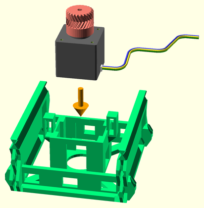 
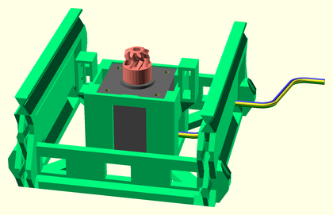 Step 2
Insert the limit microswitch in the left-side limit switch clip in the X/Y motor rail segment. Orient the switch with the arm leaning outwards on top. Route the wiring through the back of the limit switch clip, and out the same front-left wiring access hole as the motor wires.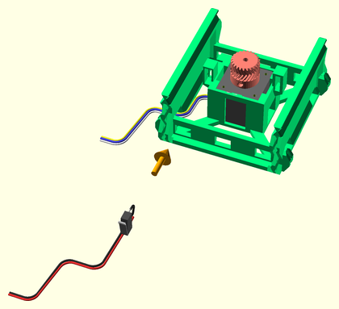 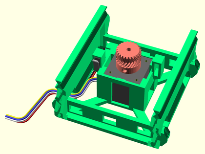
Y Axis Assembly
Step 1
Join a rail segment to each end of another motor rail assembly. Apply mineral oil to the slider rail V-grooves for lubrication.

Step 2
Join opposing glass bed supports to either side of both Y sled endcaps. Screw an adjustment screws into each of the supports, leaving them loose for now.

Step 3
Join two XY sled parts together. Make sure the bottom racks line up. Lubricate the slider pinchers and gear rack teeth on the underside of the sled with mineral oil.

Step 4
Join a Y sled endcap assembly to one end of the Y sled central assembly.

Step 5
Slide the Y sled partial assembly onto the Y axis rails assembly, so that it is centered. The gear rack should slide between the limit switch on the left, and the drive gear. Adjust the drive gear if necessary, so that it aligns exactly with the herringbone rack.

Step 6
Join the other Y sled endcap assembly to the end of the Y sled partial assembly.

Step 7
Optionally join a rail endcap to each end of the Y axis.

X Motor Segment Assembly
Step 1
Seat the stepper motor with drive gear in the X/Y motor rail segment, with the wiring facing towards the left. Route the wiring out the front left wiring access hole.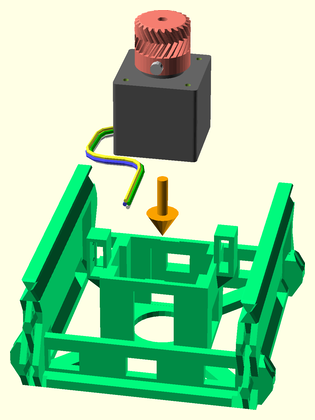 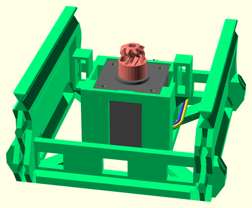 Step 2
Insert the limit microswitch in the left-side limit switch clip in the X/Y motor rail segment. Route the wiring through the back of the limit switch clip, and out the same front-left wiring access hole as the motor wires.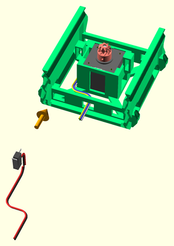 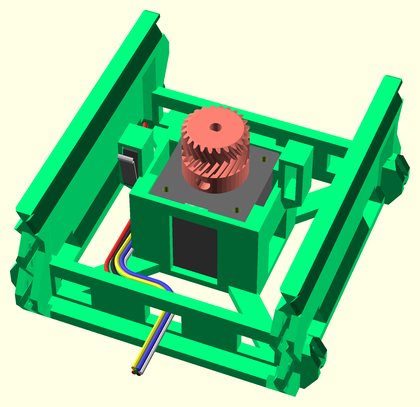
X Axis Assembly
Step 1
Join a rail segment to each end of a motor rail assembly, to make the X axis slider. Route the wiring to one end of the slider assembly. Apply mineral oil to the slider rail V-grooves for lubrication.

Step 2
Join two XY sled parts together. Make sure the bottom racks line up. Lubricate the slider pinchers and gear rack teeth on the underside of the sled with mineral oil.

Step 3
Join the X sled cable-chain mount to the front/left side of the X sled endstop.

Step 4
Join an X-Y joiner endcap to one end of the X sled central assembly.

Step 5
Slide the X sled partial assembly onto the X axis rails assembly, so that it is centered.

Step 6
Connect the Y axis assembly to the XY joiner on the X axis partial assembly. Route the Y axis wiring through the front hole in the XY joiner.

Step 7
Join the other X sled endcap assembly to the end of the X sled assembly, fixing the Y sled assembly in place.

Step 8
Attach the cable chain joiner mount to the X motor segment, on the same side as the X sled cable chain joiner and Y axis wiring.

Step 9
Attach the cable-chain assembly (with 13 or 14 links) to the cable chain mounts on the X axis assembly, making sure to feed the Y-axis wiring through the cable chain. Route the wiring in through the wiring access hole beside the cable chain mount, then out through the end of the X axis assembly. You may need to lubricate each cable-chain pivot with mineral oil.

Z Tower Assembly
Step 1
Attach two Z rail segments together to make a Z tower rail assembly. Do this again to make a second tower. Superglue these together if they aren't attached firmly. Lubricate the slider rails and lifter screw slots with mineral oil.

Step 2
Attach support legs to each side of a YZ Joiner part. Do this again for a second YZ Joiner part.

Step 3
Attach a Z base part to the top of each YZ joiner assembly, to make two tower base assemblies. Superglue these together if the attachment is wobbly in any way.

Step 4
Attach a Z tower rail assembly to the top of each tower base assembly. Superglue these together if the attachment is wobbly in any way.

Step 5
Attach a cable chain joiner mount to the front-size of the left Z tower, above the top hole of the bottom rail segment.

Extruder Assembly
Step 1
Insert the 686 bearing into the extruder idler arm.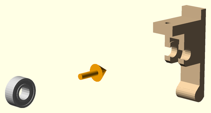 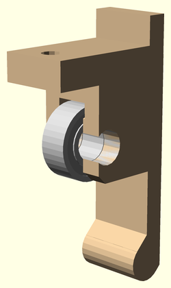 Step 2
Insert the idler axle through the 686 bearing, and lock it into the extruder idler arm with the axle clip.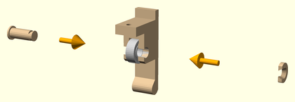 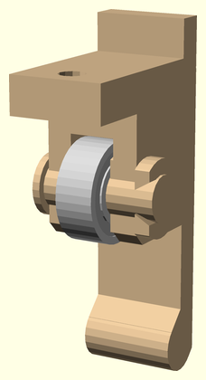 Step 3
Attach the extruder drive gear onto the stepper motor shaft.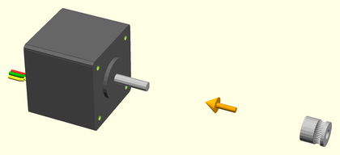 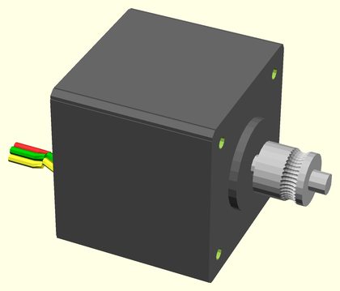 Step 4
Slide the JHead extruder hot end into the slot in the bottom of the JHead platform. Route the wiring up through the wiring access slot, and along the back of the extruder platform.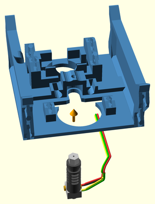 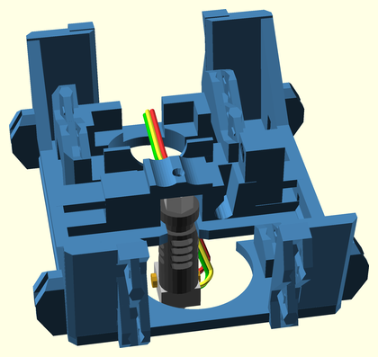 Step 5
Clip the extruder motor with drive gear to the jhead platform using the extruder motor clip.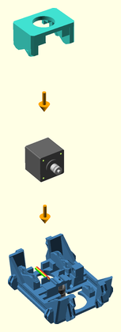 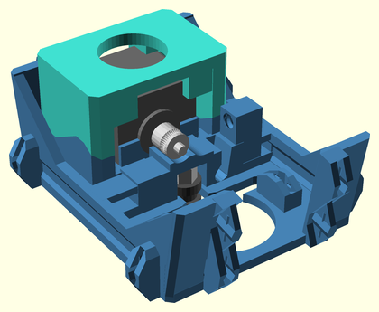 Step 6
Insert the idler arm into the idler hinge hole on the JHead platform.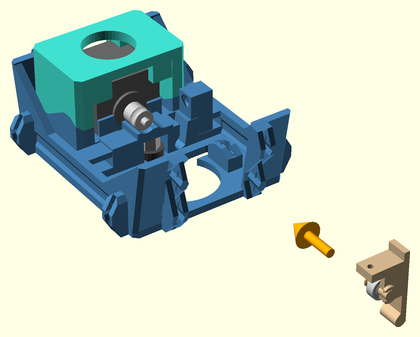 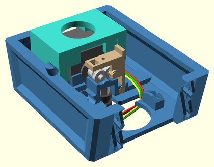 Step 7
Insert the idler latch arm into the latch hinge hole on the JHead platform.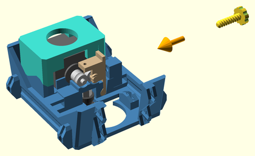 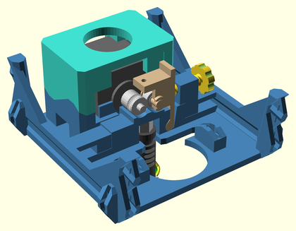 Step 8
Insert the extruder fan shroud into the JHead platform, latching the JHead hot end, and idler and latch arms into place.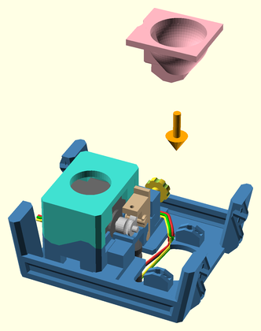 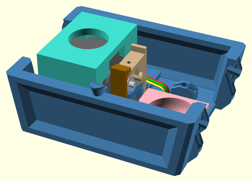 Step 9
Clip a cooling fan to the top of the extruder fan shroud using the extruder fan clip. Route the wiring along the back side of the extruder platform. WARNING: This fan MUST be running any time the J-Head hotend is hot, or else the bottom of the mount will warp! Either hook it up to a constant 12V supply, or make sure your firmware turns it on when the extruder is hot.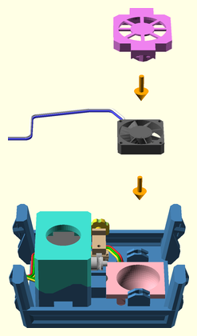 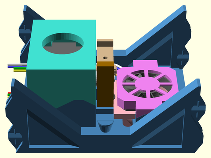 Step 10
Attach a cooling fan to the cooling fan shroud.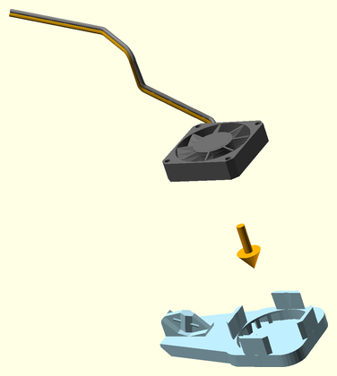 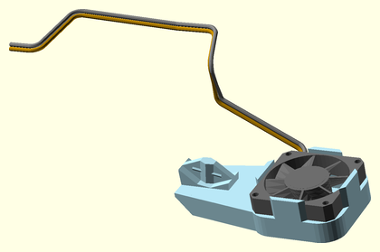 Step 11
Attach the cooling fan shroud assembly to the bottom of the extruder fan shroud. Route the wiring up through the wiring access slot, and along the back side of the extruder platform.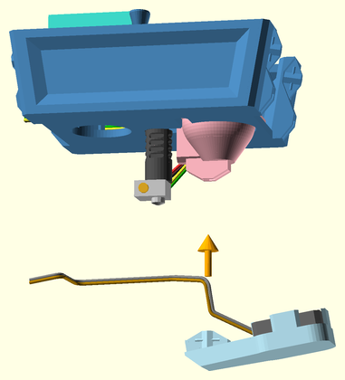 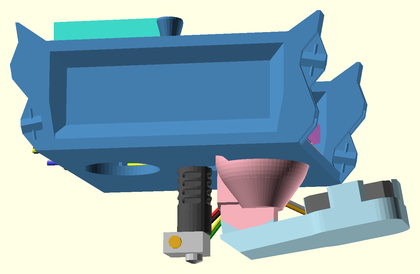
Bridge Assembly
Step 1
Attach bridge segments to either end of the extruder platform assembly. Superglue these together if the attachments are in any way wobbly. Route the wiring through the left side bridge segment, and out the front-left wiring access hole.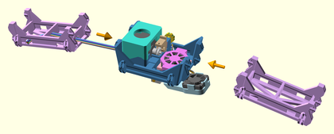 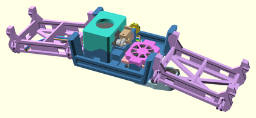 Step 2
Attach a vertical cable-chain mount to the front left side of the extruder bridge.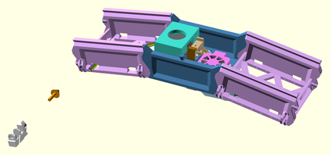 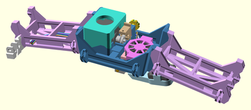 Step 3
Attach Z sled segments to either end of the extruder bridge assembly. Superglue these on if the attachments are in any way wobbly.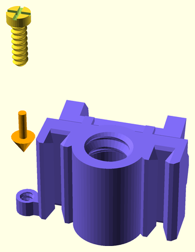 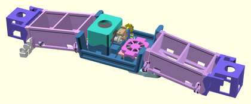 Step 4
Press fit the lifter screw onto the stepper motor shaft, making sure the flatted side matches that on the lifter screw shaft hole. (The hole on the lifter screw rim is aligned with the flatted side.) Apply mineral oil to the screw threads for lubrication.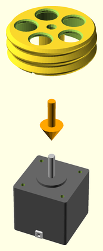 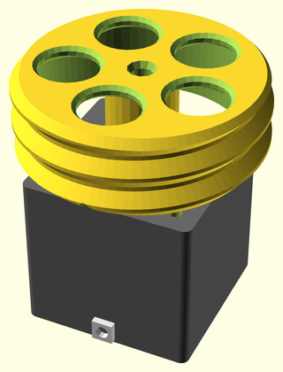 Step 5
Insert the Z stepper motors into the motor mount cages on the Z-sleds at both ends of the bridge. Route the wiring to the left-side front wiring access hole with the rest of the extruder wiring.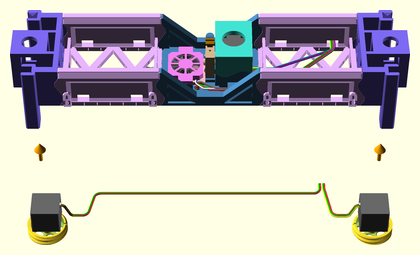 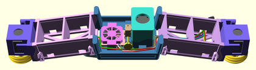
Final Assembly
Step 1
Attach the right Z tower assembly to the right end of the XY axes assembly. Route the right tower wiring through the rear X axis wiring access holes.

Step 2
Attach the left Z tower assembly to the left end of the XY axes assembly. Route all wiring out the back of the left Z tower base.

Step 3
Lower the extruder bridge down into the Z tower grooves, screwing the lifter screws into the Z-rail racks evenly.

Step 4
Attach a limit microswitch, with wiring, to the Z rail endcap. Orient the switch as shown.

Step 5
Attach the Z tower endcap to the left Z tower. Route the limit switch wiring down through the wiring access holes in the left Z tower, and out the back of the base with the other wiring.

Step 6
Attach a cable chain (18 links) from the extruder bridge cable chain mount to the left Z tower cable chain mount. Route the extruder bridge wiring up through the cable chain, back into the left Z tower through the wiring access hole below the cable chain mount, down the left Z tower, and back out the motor rail segment to where the controller board will be mounted. You may need to lubricate each cable-chain pivot with mineral oil.

Step 7
Attach the spool holder to the top of the other Z tower.

Step 8
Attach the RAMPS motherboard mount to the end of the printer base.

Step 9
Lower the glass build platform into the support corner clips on the Y sled. You should be able to carefully work the clips around the glass plate's corners.

Step 10
Cradle the spool axle in the spool holder top.

Step 11
Optionally clean up wiring using the wiring clips.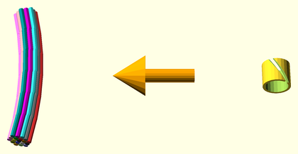
RAMPS Wiring
Heres a diagram of what needs to be connected where on a RAMPS 1.4 controller board.
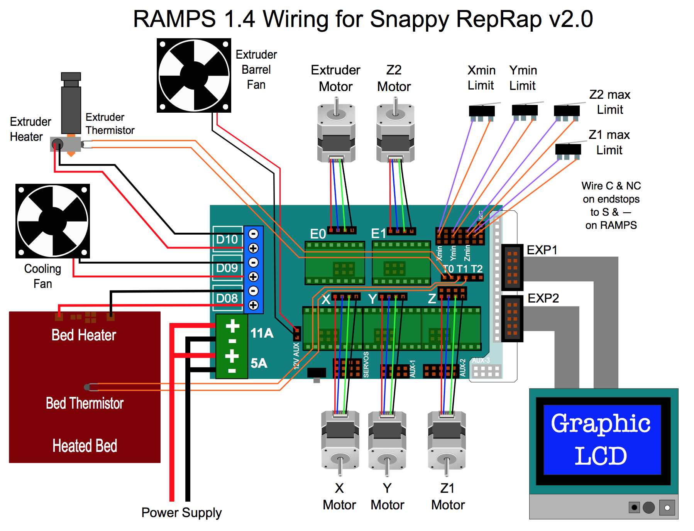